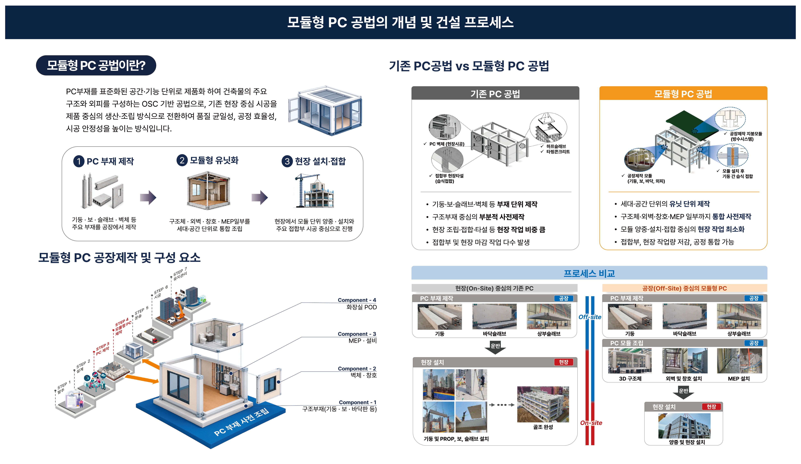

홈 · 연구단소개 · 모듈형 PC 공법 소개
PC부재를 표준화된 공간·기능 단위로 제품화하여 건축물의 주요 구조와 외피를 구성하는 OSC 기반 공법
WHAT IS
기존 현장 중심 시공을 제품 중심의 생산·조립 방식으로 전환하여 품질 균일성, 공정 효율성, 시공 안정성을 높이는 방식입니다.
기둥·보·슬래브·벽체 등 주요 부재를 공장에서 제작
구조체·외벽·창호·MEP 일부를 세대·공간 단위로 통합 조립
현장에서 모듈 단위 양중·설치와 주요 접합부 시공 중심으로 진행
COMPONENTS
발주 → 설계 → PC제작 → 모듈형 PC제작 → 운송 → 시공 → 유지관리의 7단계 공정
기둥 · 보 · 바닥판 등 구조 부재
외피를 구성하는 벽체 및 창호
기계·전기·배관 등 설비 모듈
욕실·화장실 통합 유닛 모듈
COMPARISON
PROCESS
모듈형 PC 공법은 공장에서 모듈 조립까지 완료해 현장 작업과 공정을 최소화합니다.
OVERVIEW
